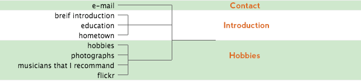

I want to make a personal site for my final project. My goal is to make an interactiv website. Each elements should be able to "interact" with each other and people who browse the website. The major colors should not exceed three kinds of colors. The content must be consice and straightforward. I am pursuing for making a website that it's funny, beautiful, and easy to access information. In a word, the structue and information of the website are most important. I didn't determine the style of the website yet. One option is using various images to display different types of information.
The content of the website includes five categories: Home, About, Photographs, Music, Contact. A brief intro will appear on the "Home" page. "About" contains information about my education, hometown, hobbies, etc. I will recommand some musicians on the page of "Music" and pick some photographs that I shot in the category of "Photographs". Contact information including flickr and e-mail will show on the page of "Contact".
Here is my sorting:
Because it is a new wewbsite, so I applied method of open card sorting. Participants are asked to sort several items and give each category a appropriate name. I used WebSort to create a card-sorting usability test. Below shows the results:
Participant #1:
Participant #2:
Participant #3:

The results are similar. They all regarded "hobbies", "photographs", "musicians" as "interests". Otherwise, "brief introduction", "education", "hometown" are all sorted into the category of "personal information" or "introduction". Two participants placed "flickr" to the category of "interests". Two participants sorted "e-mail" into "personal information". Surprisingly, the number of categories that they defined do not exceed three, which I think it's the biggest difference between my sorting and theirs. Also their sorting do not think about the home page. In consideration to the diversity of the content of the website, I decided to remain the original structure that I posted before. But moving "flickr" into the categary of "photographs". Here is the final sorting: